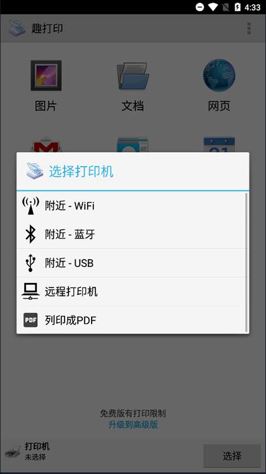
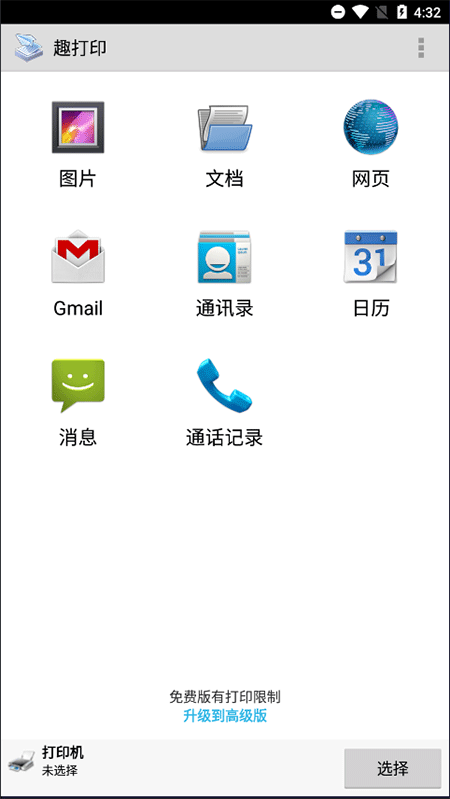

趣打印用了半年，踩过的五个坑全在这
从手机远程打印到电脑共享打印机，趣打印看着简单，实际有几个容易掉进去的坑。本文把我踩过的五个真实故障从症状到解法一次说清。
手机直接连打印机打印这件事，说起来简单得像点一下屏幕。但真正把趣打印从官网装到手机上、又把家里那台老打印机折腾成远程可访问的之后，我才发现——这条链路从头到尾至少有五个地方能让你卡壳半小时。今天把这半年踩过的坑整理出来，每个都是当时以为要卸载重装、实际几分钟就能救回来的。
坑一：远程打印机列表永远是空的
症状：手机装好了趣打印，桌面端也跑起来了，账户也注册了，但一进「远程打印机」列表——空的。刷新也没用，重启两边都没用。
原因：这个坑我足足卡了二十分钟才反应过来。趣打印的远程打印有一个前提条件藏得有点深：接收端那台连打印机的电脑，必须在桌面端应用里手动开启「互联网访问」。默认安装好之后这个开关是关着的。不开的话，你手机上刷一万遍都是空列表。
还有几个次要条件也容易漏：两边登录的必须是同一个账户，或者接收端把发送端加进了授权用户列表；接收端电脑得开着、不能休眠；如果公司网络的话，防火墙可能把趣打印的出站连接挡了。
解法：先去桌面端检查「互联网访问」开关——90% 的情况就是这个没开。如果开了还不行，依次核对账户、电脑状态、防火墙这三项。

坑二：以为买了 Premium 就能远程打印，其实不是
症状：当初在printershare下载看到 Premium 的介绍，我在 Google Play 花了钱买了 Android Premium，以为所有功能都解锁了。结果一点远程打印，弹出来说需要订阅。当时心想这软件怎么还玩二次收费。
原因：趣打印的计费逻辑是典型的「两端分离」设计，也是最容易让人混淆的地方。Android Premium 只解锁 Android 移动端的本地打印限制——WiFi、蓝牙、USB 直连这些通道从有限页数变成无限。但远程互联网打印的订阅，是绑在接收端电脑上的，跟你手机买没买 Premium 完全无关。
换句话说：你手机买了 Premium，只是手机本地连打印机随便打；想让手机通过互联网打家里的打印机，家里那台电脑得单独按月付费订阅基础版或商业版。这两套是独立的。
解法：想清楚你到底需要什么。如果只是同网段 WiFi 打，买一次 Premium 永久解锁就够了；真要跨互联网远程打印，得在接收端桌面应用里开订阅，基础版 500 页/月够用了。
坑三：打印出来的东西模糊有条纹，以为是驱动坏了
症状：从手机打照片出来，颗粒感很重，还有淡淡的条纹。我第一反应是趣打印的驱动选错了，跑去设置里找驱动重装了一遍——还是模糊。
原因：这个坑的根因是多层面的。先说趣打印本身的质量设置，默认可能选了「草稿」模式。草稿模式是给快速看版式用的，省墨省时间，但分辨率低得离谱。改回「普通」或「高质量」马上就清晰了。
但改完还模糊的话，就得排查打印机本身了。是不是没粉没墨了？硒鼓老化了？喷嘴堵了？还有一个容易忽略的点：源文件本身分辨率就低。一张从微信里保存的压缩图片，你用 1200 DPI 打出来也是糊的——趣打印变不了源文件的像素。
解法：先在打印设置里把质量从草稿调到普通，照片直接上高质量。如果还不行，检查打印机硬件状态，再看源文件本身够不够清晰。远程打印的话建议选普通或草稿模式——文件越小传输越快，远程通道本身就比本地慢半拍。

坑四：远程打印一直转圈，十几秒没反应
症状：手机点了打印，然后就卡在「正在上传」或者「正在等待」的状态，过了一分钟还没动静，以为网络断了。
原因：远程打印的链路比你想的长——发送端手机要把文件上传到趣打印的云服务，云服务再转发给接收端电脑，接收端电脑再把文件喂给打印机。中间任何一环慢都会导致整体延迟。一般 10 到 60 秒的等待是正常的，大文件（比如几十 MB 的 PDF 或照片）可能要更久。
还有两个隐性因素：接收端的订阅额度用完了（基础版 500 页/月，用完请求直接被拒）；或者趣打印云服务当时负载高——这是第三方服务的通病，高峰期会慢一些。
解法：先别急着取消，等够一分钟再说。如果一直不动，检查接收端的订阅剩余页数，再看看接收端电脑的网络是否正常。文件本身尽量压小一点，远程打印选草稿或普通模式能显著减少传输体积。
坑五：通讯录和日历功能点进去什么都没有
症状：好奇趣打印能不能打通讯录，点进去发现列表是空的——明明手机里存了两百多联系人。日历也是一样，选了时间范围但没事件显示。
原因：这是 Android 的权限控制在起作用。趣打印首次访问通讯录或日历时，系统会弹权限请求。如果当时手滑点了「拒绝」，后面功能就一直是空的，而且趣打印自己不会主动提醒你权限没给。iOS 上逻辑一样，系统权限没开就是空的。
解法：去手机的「设置 → 应用管理 → 趣打印 → 权限」里手动打开通讯录和日历的读取权限。开了之后回趣打印重新进一次就能看到数据了。趣打印只在你主动点选要打印的时候才会读取这些数据，平时不碰，隐私方面不用担心。遇到更复杂的参数调整或排障，翻一下printershare文档基本都能找到对应条目。
防坑清单（速查）
- 远程打印不出来 → 先检查桌面端「互联网访问」开关开没开
- Premium 买了还用不了远程 → 远程订阅在接收端电脑上买，跟手机 Premium 无关
- 打印模糊 → 先调质量模式，再查打印机硬件和源文件分辨率
- 远程打印卡很久 → 等 60 秒再说，检查订阅额度和文件大小
- 通讯录日历空的 → 手机设置里手动开趣打印的权限
收尾
知道这几个坑之后，趣打印其实相当省心。我现在出门在外需要打个文件回家，手机点开选打印机就完事，不用再管家里的电脑有没有人在。希望这篇避坑指南能帮你少走我走过的弯路。
趣打印这套软件从手机端到桌面端、从本地到远程的完整资料，已经同步维护在三个代码仓库里——GitHub 上是主版本，国内访问慢的话可以切到 Gitee 或 GitCode 的镜像，内容完全一致。